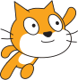
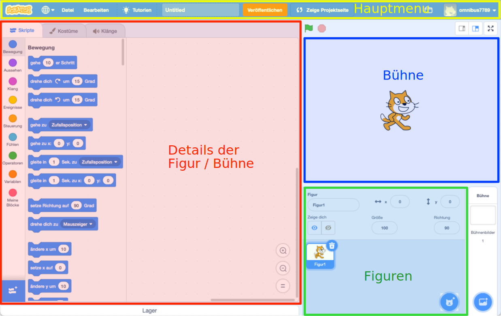

Scratcher werden
Scratch ist eine grafische Programmiersprache für Anfänger . Entwickelt wurde Scratch von der Lifelong Kindergarten Group vom Massachusetts Institute of Technology (MIT) in Massachusetts USA.
Scratch ist nicht nur eine Programmiersprache sondern auch eine Online-Gemeinschaft. Mehrere Millionen Kinder und erwachsene Kinder haben mit Scratch Geschichten, Animationen und Games erstellt und diese miteinander geteilt. Vielleicht hast du schon in der Primarschule mit Scratch gearbeitet. Falls nicht, wirst du dich in diesem Kapitel bei Scratch registrieren und dein erstes Programm schreiben. Viel Spass.

Abb. 1 – Das Scratch Maskottchen ist eine Katze
Registrieren
Öffne den Webbrowser und surfe auf die Seite scratch.mit.edu. Klicke dann auf werde Scratcher, siehe Video 1. Registriere dich bei Scratch mit einem eigenen Benutzernamen (wähle einen Fantasienamen). Wähle dann ein Passwort, dass nicht zu einfach ist und du dir gut merken kannst. Am besten notierst du dir dein Passwort. Beantworte anschliessend die Fragen zum Land, deinem Geburtstag und deinem Geschlecht. Zum Schluss musst du noch eine E-Mailadresse angeben. Wenn du möchtest, kannst du deine private E-Mail Adresse angeben oder sonst deine E-Mailadresse von der Schule.
Video 1 – Scratcher werden (Video: T. Jenni)
Wenn du dich angemeldet hast, musst du deine E-Mailadresse bestätigen. Öffne dazu dein E-Mailprogramm. Du solltest eine E-Mail erhalten haben mit einem Bestätigungslink. Wenn alles geklappt hat, klicke auf entwickeln und dann auf Tutorien. Wähle das Tutorial Erste Schritte und bearbeite dieses komplett.
Meine Sachen
Wenn du bei Scratch angemeldet bist, werden deine Programme automatisch bei Scratch gespeichert, siehe Video 2. Du kannst dann von überall her auf deine Programme zugreifen.
Wenn du dein Programm veröffentlichen willst, solltest du auf der Projektseite das Programm beschreiben. Schreibe unter Anleitung, wie man das Programm bedient und unter Anmerkungen, von wem du Programmteile übernommen hast. Falls du keine Kommentare von anderen Scratchern zulassen willst, kannst du auf der Projektseite unten die Kommentarfunktion ausschalten.
Alle deine Programme kannst du unter Meine Sachen, dem Ordner-Symbol oben rechts, finden. Dort kannst du auch eine veröffentlichung wieder rückgängig machen.
Video 2 – Meine Sachen, Projekte veröffentlichen (Video: T. Jenni)
Programme abspeichern und hochladen
Wenn man grösser Programme erstellt, kann es passieren, dass man aus Versehen einen ganzen Programmblock oder eine ganze Figur löscht. Es ist darum ratsam, regelmässig Sicherungskopien zu erstellen und auf deinen Computer runterzuladen. Wie man dafür vorgeht, wird in Video 3 gezeigt.
Video 3 – Ein Programm herunterladen und wieder hochladen (Video: T. Jenni)
Die Hauptbereiche des Scratch-Fensters
Das Scratch-Fenster ist in mehrere Bereiche aufgeteilt. Du kannst dir das ganze wie ein Theater vorstellen, siehe Abb. 2. In einem Theater gibt es eine Bühne auf welcher Schauspieler (Figuren) ein Stück aufführen.

Abb. 2 – Die Hauptbereiche des Scratchfensters. (Bild: T. Jenni)
Im Figurenbereich kannst du die Schauspieler hinzufügen, entfernen und ihre Position und Ausrichtung auf der Bühne verändern, siehe Video 4.
Video 4 – Figuren bearbeiten (Video: T. Jenni)
Im Bereich Details der Figur/Bühne kann unter Skripte das Drehbuch schreiben. Dazu gibt es die Befehlsbibliothek mit den verschiedenen Befehlskategorien. Unter Kostüme kann man die Bilder (Kleider) der Figur ändern. Unter Klänge kann man der Figur verschiedene Töne zuordnen, siehe Video 5.
Video 4 – Skripte, Kostüme und Klänge (Video: T. Jenni)
Aufgabe
Arbeite die folgenden Scratch-Tutorials durch.
- Füge ein Bühnenbild hinzu
- Füge eine Figur hinzu
- Verstecken und Zeigen
- Lass es sich drehen
- Ändere die Grösse
- Animiere eine Figur
- Gleite umher
Autoren: T. Jenni
Letzte Änderung: 14. Mai 2021

Einsteigerkurs für den BBC micro:bit von T. Jenni, et al. ist lizenziert unter einer Creative Commons Namensnennung - Nicht-kommerziell - Weitergabe unter gleichen Bedingungen 4.0 International Lizenz.